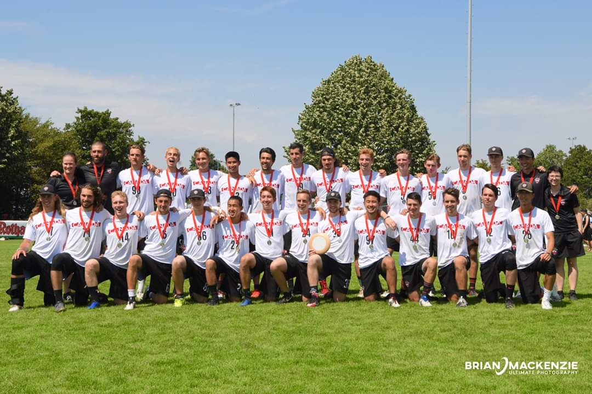

Resume
Work Experience
Present
Huntr is a bootstrapped SaaS startup building AI-powered career tools for job seekers. I joined as the first engineering hire. I led the development of a product pivot from a B2B recruiting CRM to a suite of AI-powered job search tools, including a resume builder that has been used to create more than 500k resumes. I work across the full stack with a slight bias towards backend and system design. Along the way, I've introduced engineering practices including code review, automated testing, CI/CD, and production observability to support the team's growth. With the introduction of LLM-assisted software engineering, my responsibilities have shifted more into the product engineering space. My process involves using coding agents to rapidly prototype and experiment on product ideas based on look and feel.
Currently, I am leading development of a RAG-based career intelligence platform, designing retrieval and AI workflows that improve the quality and truthfulness of generated career materials while keeping inference costs low.
Sep 2022
FISPAN is a growth-stage FinTech startup building embedded banking products for major treasury banks. I joined the innovation team to explore new product opportunities beyond the company's core offerings, working on 0-1 product development as part of a small team. My work focused primarily on SMB banking, including co-developing Remittance Linker, an accounts receivable automation product that grew to 150+ active businesses, and partnering with Mastercard to prototype a virtual card adoption product by connecting ERP and payment data.
Sep 2019
Routific is a vehicle routing and fleet management platform for delivery businesses. I joined as a co-op working over the full stack on the platform team. Worked closely with a product manager and designer to deliver features and improvements based on user feedback. Initially a 4 month co-op contract extended to a full year.
Education
Other Fun Stuff
In 2019 I had the honour of representing Canada at the World Junior Ultimate Championships in Heidelberg, Germany. We finished 2nd in the world losing only to the United States in a competitive final.
